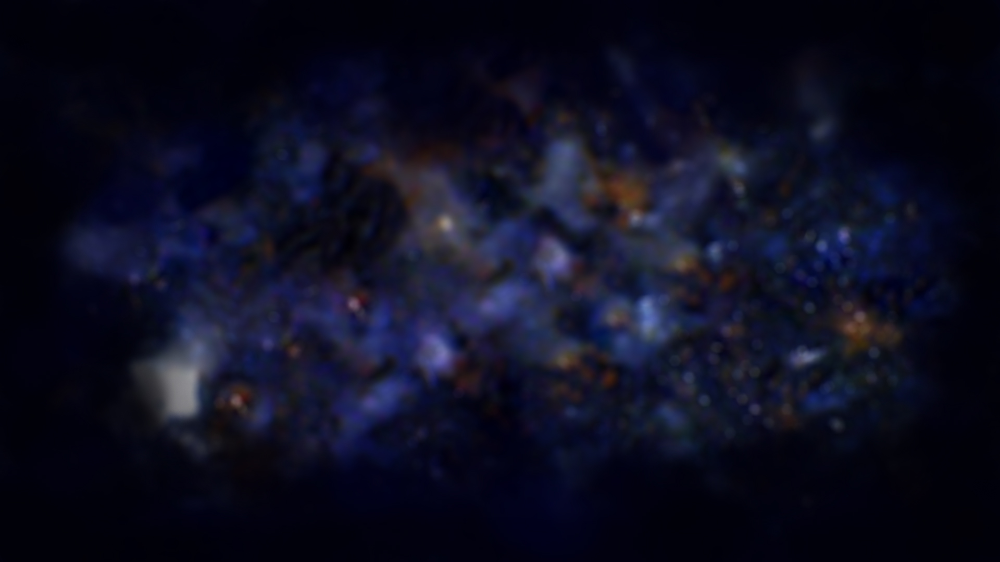
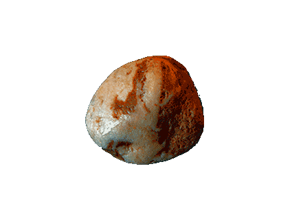

Namiki es un universo de cristalizaciones líticas,
surgidas en el sensado de eventos mínimos de nuestro entorno,
que descubrirás en el recorrido de este espacio.
Las piedras revelan así el aspecto energético, vibrátil e indisoluble que conforman en unidad las entidades vivas.